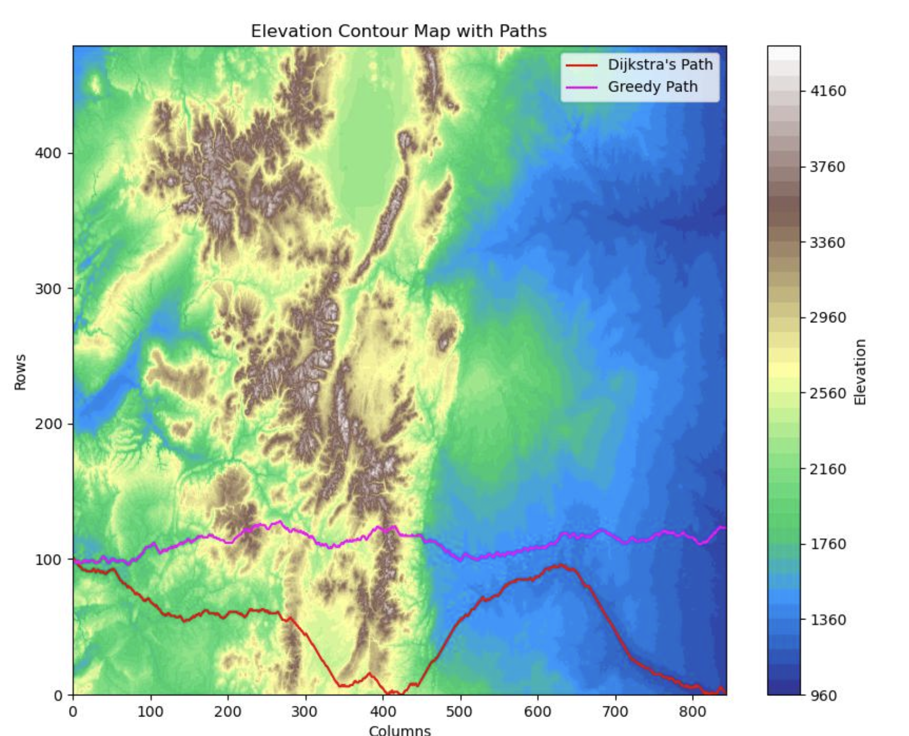
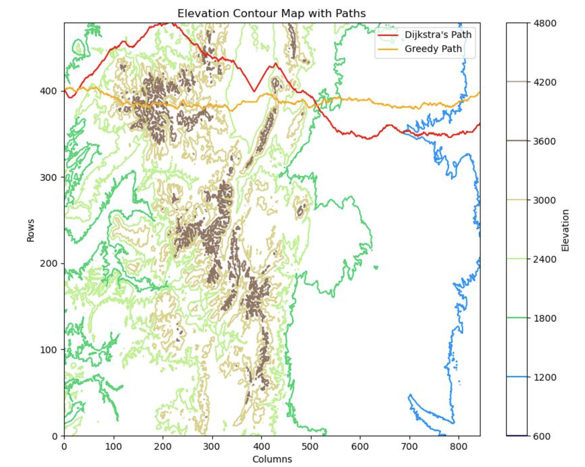

Project Preview


Project Case Study
A topographical data project built for my Algorithms class, using Python to find the shortest path and path of least resistance from west to east across a mountain range.


MountainPaths analyzes topological map data to identify an efficient route across mountainous terrain, with a focus on minimizing resistance while traveling from west to east.
I learned how different pathfinding strategies behave on the same terrain data, how algorithm design changes both route quality and runtime tradeoffs, and how to translate theoretical ideas into code.
I built a Python project that applied both Greedy and Dijkstra's approaches to a topographical map, producing route comparisons and a clear path-of-least-resistance result from west to east.
This final project pushed me to connect algorithm theory with a visual, data-driven problem where implementation details directly affect route quality and performance.